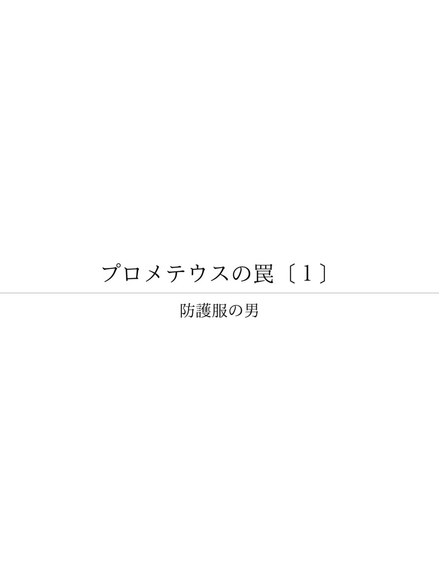

| プロメテウスの罠〔１〕 防護服の男「頼む、逃げてくれ」 (朝日新聞デジタルＳＥＬＥＣＴ) | |
| 朝日新聞 | |
| (2013) | |
プロメテウスによって文明を得た人類が、いま原子の火に悩んでいる。人類に火を与えたとされるギリシャ神話の神族の名を冠し、３・１１直後の原発３０キロ圏内の様子を生々しく伝えた朝日新聞の好評連載の第１シリーズ「防護服の男」全１３回をＷＥＢ新書化。福島第一原発の破綻を背景に、国、民、電力を考える。

内容紹介
プロメテウスによって文明を得た人類が、いま原子の火に悩んでいる。人類に火を与えたとされるギリシャ神話の神族の名を冠し、３・１１直後の原発３０キロ圏内の様子を生々しく伝えた朝日新聞の好評連載の第１シリーズ「防護服の男」全１３回をＷＥＢ新書化。福島第一原発の破綻を背景に、国、民、電力を考える。
初出
朝日新聞 二〇一一年十月三日～十月十六日
第１章 頼む、逃げてくれ
第２章 深夜、もっと遠くへ
第３章 なぜあんな格好を
第４章 殺人罪じゃないか
第５章 私、死んじゃうの？
第６章 ハエがたかっていた
第７章 早く東京へ来なさい
第８章 「ふるさと」歌えない
第９章 初めは言えなかった
第１０章 口止めされた警察官
第１１章 あの２人のおかげで
第１２章 区長は逃げなかった
第１３章 自宅裏は荒れはてた
福島県浪江町の津島地区。東京電力福島第一原発から約３０キロ北西の山あいにある。
原発事故から一夜明けた２０１１年３月１２日、原発１０キロ圏内の海沿いの地域から、１万人の人たちが津島地区に逃れてきた。小中学校や公民館、寺だけでは足りず、人々は民家にも泊めてもらった。
菅野（かんの）みずえ（５９）の家にも朝から次々と人がやってきて、夜には２５人になった。多くが親戚や知人だったが、見知らぬ人もいた。
築１８０年の古民家を壊して新築した家だ。門構えが立派で、敷地は広い。２０畳の大部屋もある。避難者を受け入れるにはちょうどよかった。門の中は人々の車でいっぱいになった。
「原発で何が起きたのか知らないが、ここまで来れば大丈夫だろう」。人々はとりあえずほっとした表情だった。
みずえは２台の圧力鍋で米を７合ずつ炊き、晩飯は握り飯と豚汁だった。着の身着のままの避難者たちは大部屋に集まり、握り飯にかぶりついた。
夕食の後、人々は自己紹介しあい、共同生活のルールを決めた。
一、便器が詰まるのを避けるため、トイレットペーパーは横の段ボール箱に捨てる。
一、炊事や配膳はみんなで手伝う。
一、お互い遠慮するのはやめよう......。
人々は菅野家の２部屋に分かれて寝ることになった。みずえは家にあるだけの布団を出した。
そのころ、外に出たみずえは、家の前に白いワゴン車が止まっていることに気づいた。中には白の防護服を着た男が２人乗っており、みずえに向かって何か叫んだ。しかしよく聞き取れない。
「何？ どうしたの？」
みずえが尋ねた。
「なんでこんな所にいるんだ！ 頼む、逃げてくれ」
みずえはびっくりした。
「逃げろといっても......、ここは避難所ですから」
車の２人がおりてきた。２人ともガスマスクを着けていた。
「放射性物質が拡散しているんだ」。真剣な物言いで、切迫した雰囲気だ。
家の前の道路は国道１１４号で、避難所に入りきれない人たちの車がびっしりと停車している。２人の男は、車から外に出た人たちにも「早く車の中に戻れ」と叫んでいた。
２人の男は、そのまま福島市方面に走り去った。役場の支所に行くでもなく、掲示板に警告を張り出すでもなかった。
政府は１０キロ圏外は安全だと言っていた。なのになぜ、あの２人は防護服を着て、ガスマスクまでしていたのだろう。だいたいあの人たちは誰なのか。
みずえは疑問に思ったが、とにかく急いで家に戻り、避難者たちにそれを伝えた。

１１年３月１２日夕、菅野みずえは自宅に駆け戻り、防護服の男たちの話を避難者に伝えた。議論が始まった。
「本当に危険なら町や警察から連絡があるはずだ。様子をみよう」。やっと落ち着いたばかりで、みんな動きたくなかった。
しかし深夜、事態が急変する。数台のバスが、避難所になっている公民館に入って行った。それに避難者の１人が気付く。バスの運転手は「避難者を移動するのだ」といったという。
当時、浪江町は、逃げ遅れた２０キロ圏内の町民たちを津島地区までバスでピストン輸送していた。しかし、みずえはそんなことは知らず、やはりここは危ないのではないかと思った。みずえは寝ていた人々を起こし、再び議論となった。
多くは動きたがらなかった。しかし、一人の女性が「みんながいたら、菅野さん家族が逃げられないでしょう」といった。それで決まった。
「車のガソリンが尽きるところまで避難しよう」
深夜０時すぎ、若い夫婦２組が出発した。２月に生まれたばかりの乳児や、小さい子どもがいた。
夫婦は最初、「こんな深夜に山道を逃げるのはいやだ」と渋ったが、「子どもだけでも逃がしなさい」とみずえがいい、握り飯を持たせた。
翌１３日の朝食後、再び話し合った。前夜「逃げない」といっていた若い夫婦連れが「子どものために逃げます」といった。年配の女性が、夫婦に自分の車を貸した。
「私は１人だから、避難所でバスに乗るわ」
夕方までには、２５人全員が福島市や郡山市、南相馬市などへそれぞれ再避難した。
みずえは近くの家で避難している人たちにも、防護服の男たちのことを伝えた。１人が笑って答えた。
「おれは東電で働いていた。おれらのつくった原発がそんなに危ないわけねえべ」
男は原発事故からではなく、津波から逃れてきたのだ。みずえはこれで気が抜けた。みずえと長男の純一（２７）は避難を取りやめた。
純一は避難所の活性化センターの炊き出し係で、握り飯をつくっていた。
「おれだけ逃げるわけにいかないよ」。このとき津島地区から１０キロほどの地点で、３０マイクロシーベルト用測定器の針が振り切れていた。
１１年３月１３日に菅野家の２５人が出て行った後も、津島地区の避難者は大半が残っていた。
避難指示は１２日午前５時４４分に１０キロ圏内に拡大。１号機が水素爆発した後、午後６時２５分に２０キロ圏内に広がった。
しかし官房長官の枝野幸男は１２日夜の記者会見で、「放射性物質が大量に漏れ出すものではない。２０キロ圏外の地域の皆さんに影響を与えることにはならない」と語った。
要するに、たいしたことはないが念のため避難してくれ、という趣旨だ。人々は３０キロの津島地区は安全だと信じていた。
東電の社員が１２日と１３日に浪江町の津島支所を状況報告に訪れた。彼らは防護服ではなかった。「ここは危ない」ともいっていない。菅野みずえが会った男たちの様子とは大きく違っていた。
役場職員も区長も、みずえの会った防護服の男を見ていない。しかし、みずえは見聞きしたことをしっかりメモに書きとめていた。
１５日早朝、前日の３号機に続いて、２号機で衝撃音がし、４号機が爆発した。政府は初めて２０～３０キロ圏内の「屋内退避」を要請する。
津島地区の住民が避難したのはそのころだった。町長の馬場有らが１４日の３号機の爆発をテレビで知り、隣の二本松市に１５日から自主避難することを決めたのだ。
福島第一原発の正門では、１５日午前９時に毎時１万１９３０マイクロシーベルトの高い放射線量が観測された。それでも枝野の発言は楽観的だった。
「放射性物質の濃度は２０キロを越える地点では相当程度薄まる。人体への影響が小さいか、あるいはない程度になっている」
「１号機、２号機、３号機とも今のところ順調に注水が進み、冷却の効果が出ている」
原子炉が１２日のうちにメルトダウンを起こしていたことが国民に知らされるのは、後になってからだ。
１２日朝、浪江町で交通整理などにあたる警官が、防護服を着用した。
「警官はなぜあんな格好をしているのか」
住民は不安を抱いた。浪江町議会議長、吉田数博（６５）は津島地区の警察駐在所を訪れ、「不安を与えるので防護服は着ないでほしい」と要請した。
吉田はいう。
「知らないのはわれわれだけだったんだ」
ＳＰＥＥＤＩ（スピーディ）というコンピューター・シミュレーションがある。政府が１３０億円を投じてつくっているシステムだ。放射線量、地形、天候、風向きなどを入力すると、漏れた放射性物質がどこに流れるかをたちまち割り出す。
１１年３月１２日、１号機で水素爆発が起こる２時間前、文部科学省所管の原子力安全技術センターがそのシミュレーションを実施した。
放射性物質は津島地区の方向に飛散していた。しかし政府はそれを住民に告げなかった。
ＳＰＥＥＤＩの結果は福島県も知っていた。１２日夜には、東京の原子力安全技術センターに電話して提供を求め、電子メールで受け取っていた。しかしそれが活用されることはなく、メールはいつの間にか削除され、受け取った記録さえもうやむやになった。
１１年３月１５日に津島地区から避難した住民に、県からＳＰＥＥＤＩの結果が伝えられたのは、２カ月後の５月２０日だった。県議会でこの事実が問題となったためだ。
福島県の担当課長は５月２０日、浪江町が役場機能を移していた二本松市の東和支所を釈明に訪れた。
「これは殺人罪じゃないか」
町長の馬場有は強く抗議した。
馬場によると、県の担当課長は涙を流しながら「すみませんでした」といい、ＳＰＥＥＤＩの結果を伝えなかったことを謝ったという。
知らされなかったのはＳＰＥＥＤＩの情報だけではない。
福島県は、事故翌日の１１年３月１２日早朝から、各地域の放射線量を計測している。
同日午前９時、浪江町酒井地区で毎時１５マイクロシーベルト、高瀬地区では１４マイクロシーベルト。浪江町の２地点はほかの町と比べて異常に高い数値を示した。１号機水素爆発の６時間以上も前で、近くには大勢の避難民がいた。
これらの数値は１１年６月３日に経済産業省のＨＰに掲載された。しかし、ＨＰにびっしり並ぶ情報の数字の中に埋もれ、その重大さは見逃された。
８月末、浪江町の災害救援本部長、植田和夫にそれらの資料を見せると、植田は仰天した。
「こんなの初めて見た。なぜ国や県は教えてくれなかったのだろう」
菅野みずえはいう。
「私たちは、国から見捨てられたということでしょうか」
菅野みずえの家にいた２５人の人々は、その後どこに向かったのだろう。
その一人、谷田（やつだ）みさ子（６２）はいま、愛知県春日井市の市営住宅で避難生活を送る。
みずえの遠い親戚だ。同じ浪江町の小野田地区に家がある。みずえの家からは約２０キロ海寄りで、福島第一原発から１０キロ以内の距離にある。
１１年３月１１日午後、自宅で地震に襲われた。
翌１２日早朝、隣の双葉町に住む次女一家が「ここは危ないから逃げるのよ」と駆け込んできた。朝９時、家を出た。
みずえの家がある津島方向に向かう国道１１４号はすでに大渋滞。国道６号に出て北に進み、南相馬市小高区の長女宅に向かう。ここで１号機の水素爆発を知り、さらに全員で津島を目指した。
みずえの家に着いたのは夕方６時を回っていた。他の避難者が炊き出しの握り飯を食べ終わったところだった。
一日中走り回って疲れていたが、避難者の会議には出席した。共同生活ルールのうち、使用済みトイレットペーパーを段ボール箱に捨てるよう提案したのは、みさ子だった。以前メキシコ旅行をしたときの経験を思い出したからだ。
しかし、ほっとしたのもつかの間、白い防護服の男たちの警告をみずえから聞かされた。
生後１カ月の赤ちゃんを抱えた次女一家７人と、長女一家４人を、夜中に逃がした。翌１３日夕、みさ子も発った。
行くあてはなかったが、「少しでも遠くに」と郡山市を目指す。
郡山市では、避難して来る人たちの放射能測定をしていた。みさ子に測定器が向けられると、針が大きく振れた。「私、死んじゃうの？」と測定係に叫んだ。
その晩は車で寝た。１５日朝、地震当時は相馬市にいた夫（５４）と携帯電話でようやく連絡が取れた。会津若松市で合流し、新潟県経由で、２２日、姉が暮らす春日井市に逃れた。
国や東京電力から的確な指示が一切ないまま、１２日間の逃避行だった。
「原発は安全」。これまで、そんな説明を何度も聞いていた。それを前提とした生活がすべて崩れた。
しかし、原発のおかげで住民が恩恵を受けてきたのは事実なのだ。「原発だけ悪いなんて、私たちはいえないのよ」。みさ子はため息をつく。
谷田（やつだ）みさ子（６２）は浪江町で生まれ育った。中学生のころ、東京電力が福島第一原発づくりを始めた。
高校卒業後、上京して就職したが、１年半で浪江町に戻った。そのあとは東電一色の生活だった。
結婚し、３人の子を育てながら焼き鳥屋をやった。客は原発で働く作業員たちだった。
その後は東電の社員寮に勤める。
２０１０年の夏まで１０年間働いた。食事をつくり、若い社員らに「やつだっち」と呼ばれて慕われた。女子寮には、女子サッカーのなでしこジャパンで活躍した鮫島彩選手らがいた。「みんないい子でかわいかったです」
子供たちの手が離れてからは、東電の管理職の寮に住み込んだ。
思い出すのは選挙の時の東電の力の入れようだ。
町長選挙や県議会議員選挙があると、寮の食堂が東電幹部らの待機場所となった。支援候補が当選すると、幹部はそろってお祝いに駆けつけた。「電力会社は政治とがっちりつながっているんだな」と感心した。
これまでの人生の半分以上を東電とかかわってきた。にもかかわらず、今度の事故では東電から何の情報もなかった。
愛知県春日井市に避難してからはいっそう情報が入らなくなった。福島県の地元紙を郵送してもらい、隅から隅まで目を通す。
これから生活はどうなるのか。補償はどうなるのか。不安だらけだ。
６月、浪江町の家に一時帰宅した。冷凍庫は地震でひっくり返ったままで、腐った食材にハエがたかっていた。
８月末、自分の車を引き取りに再び福島に戻った。夫が車を運転し、春日井市から高速道路で８時間かかった。広野町の体育館で防護服に着替え、用意されたバスに乗り込んだ。
バスが止まると、首輪をつけた２匹の犬が足元に寄ってきた。途中、道ばたで猫が２匹死んでいるのを見た。
「一歩間違えたら、私たちがああなっていたのかな」
事故後、長女は郡山に、次女は新潟に、家族は散り散りになっている。
９月、福島県の仮設住宅に入居を申し込んだ。
「福島は何十年も暮らした土地ですから。戻りたい」。涙がこぼれた。
東京に住む娘の携帯電話の指示で転々と避難を続けた者もいた。菅野みずえの家に避難した門馬洋（もんまひろし）（６７）と昌子（しょうこ）（６８）の夫婦だ。
自宅は浪江町の権現堂地区で、原発まで１０キロない。１１年３月１２日朝、町の防災無線が「津島に逃げてください」と避難を呼びかけた。車で知り合いのみずえの家に避難した。
菅野家には昼前に着いた。昌子はみずえの炊き出しを手伝い、お握りを握った。夕食後、２５人の避難民たちが自己紹介しあった。知り合いが何人もいた。
みずえから白い防護服の男たちの話を聞かされたときは、夫婦はずるずる居残った。
しかし、翌１３日朝、再びみずえから逃げるようにいわれ、昼前に菅野家を出発した。
とにかく北へ逃げようと、南相馬市を目指した。コンビニも商店も閉まっていた。レストランを見つけた。納豆定食が残っていたので、それを食べた。３軒のホテルに断られ、ようやく見つけたホテルに泊まった。
１４日夜、福島空港から飛行機に乗り、１５日に東京の長女と合流した。
長女の真理子（３６）は地震のあと、両親の携帯を呼び続けた。１１日の地震直後に、一度通じただけで連絡が途絶える。あとはメールだけだった。
しかし、メールの返信も途絶えた１２日の午前８時４３分。
「お父さんとお母さんの無事を神様にお祈りしています」
テレビやインターネットで、原発事故の新しい情報を必死で探し、両親に送り続けた。
１号機が水素爆発した１２日の午後９時。真理子はテレビで専門家が「大丈夫」と言っているのを聞いた。「爆発は外壁だけで、放射能をまき散らすものではなかったと判明」。そんなメールを送った。大変な誤りだった。
両親が南相馬市に再避難した１３日には「女川原発まで放射能が飛んでいる。そこも危ない。東京に来なさい」。
そして１４日の正午。「３号機が１１時半に爆発した。早く東京へ」
父は「そこまで行かなくてもいいじゃないか」と返してきた。真理子は「とにかく早く来なさい！」と叱った。
責任のある人たちは、だれも両親を助けてくれようとしなかった。真理子にはその不信感だけが残る。
菅野みずえの家に避難した門馬洋（６７）は元高校教師だ。福島第一原発がつくられた４０年前から反原発運動にかかわっていた。
当時住んでいた楢葉町（ならはまち）の町営住宅に、住民３人が集まって始めた運動だ。県知事や町長らに危険性を訴え続けた。東京電力とは数年前から毎月１回交渉し、１１年３月２２日も交渉が予定されていた。
原告４０４人で隣の福島第二原発について裁判を起こしたが負けた。そのとき仙台高裁の裁判長が述べた言葉を今もはっきり覚えている。
「反対ばかりしていないで落ち着いて考える必要がある。原発をやめるわけにはいかないだろうから」
それから２１年。原発は安全だという幻想はあっけなく崩壊した。
「東京電力の想定がいかに甘いか。そのために多くの人に、どれだけの被害を与えたか。いったいどう責任を取るつもりなのか」
しかし、浪江町が今回の事故で「殺人行為だ」と国や東京電力を非難していることについても、同様に違和感がある。
浪江町にも、東北電力の原発建設計画が４０年前からあった。浪江町議会が誘致を求めていたものだった。
２０１０年、町内会の会合で町議が洋を見ながらいった。「原発で浪江町の未来は明るくなる。門馬先生は反対でしょうが......」
７月に一時帰宅したとき線量を測った。家の近くで毎時４マイクロシーベルトあった。
畑には大きな柿の木がある。長女の真理子（３６）が生まれたときに植えたものだ。３００個以上の実をつけた年もあった。
「もう実がなっても食べられませんね。汚染されてしまったから」
３０年ほど前、町内の体育館を借り、東京の劇団を呼んで放射能漏れ事故をテーマにした劇をやったことがあった。原発事故で町民が逃げ惑うというストーリーだった。それが現実になった。
夫婦は東京都北区の団地に身を落ち着けている。
家賃は１３万５千円と高いが、長女の家の近くに住むため、そこに決めた。東京電力からもらった仮払金１００万円を家賃の支払いにあてる。
洋は福島にいたころから合唱が好きだった。７月、北区で合唱団の催しがあるのを知り、妻の昌子（６８）と参加してみた。
兎（うさぎ）追いしかの山、の「故郷（ふるさと）」を歌った。洋も昌子も途中で歌えなくなった。
浪江町の赤宇木（あこうぎ）地区に住む三瓶（さんぺい）ヤスコ（７７）は隣の飯舘村から嫁いで５５年になる。菅野みずえとは公民館の民謡サークル仲間だ。
ヤスコは８月初めまで、細い山道を上った一軒家に１人で住んでいた。
地震直後は、神奈川県の孫娘の１ＤＫのアパートに、富岡町の長女と孫息子の３人で避難した。
しかし、隣室の食事の音まで聞こえる。周りにも気を使う。「この年になると都会の生活は合わない」。犬と猫のことも気になり、４月末に赤宇木に戻った。
そのころは、まだ地区に数世帯が残っていた。そのうち１軒減り、２軒減り、誰もいなくなった。警察が３０キロ付近で通行規制を始めると、車も通らなくなった。
さみしくなった。夜は真っ暗だ。何も考えないように思っても手が震え、食べ物がつかえた。
気晴らしに近くをドライブした。しかし、帰り道はどの家も明かりはない。山道を落ちてもだれも助けにきてくれないと思うと、ドライブが怖くなった。
日曜になると、背中に「文部科学省」と書かれた作業服の男たちが、地区に放射線量を計測にきた。ヤスコは車がくると出て行き、「今日はなんぼですか」と尋ねる。
「１５マイクロシーベルトだよ」。男は気軽に教えてくれた。
「私の家も測ってくれんかね」
別の日、男は家の周辺を測ってくれた。家の外で１０マイクロシーベルト、居間で５・５マイクロシーベルトあった。平常値をはるかに上回る量だ。
男はそれを紙に書いてヤスコに渡した。
６月初めのある日曜日、男がポツリと言った。
「今だからいうけど、ここは初め１００マイクロシーベルトを超していたんだ。そのときは言えなかった。すまなかった」
その後も、男は「参考にして」といって、各地域の放射線量が書かれた地図をヤスコにくれた。
だが、ヤスコは８月初めまで赤宇木にとどまる。
「放射能は目に見えるわけでないし、数値を聞いてもよく分からなかったのよ」
８月初め、二本松市の仮設住宅に当たったため、赤宇木を出た。
しかし、今も２日おきに、約２５キロ離れた自宅まで車で通う。
犬と猫にえさをやるためだ。
関場和代（５２）は１１年３月１４日、会津若松市の親類宅に避難した。家は菅野みずえの家に近い浪江町南津島にあった。
その後も避難指示がないため１１年４月２日、ひとまず自宅に戻った。数日して、家の前に自衛隊のジープがとまり、隊員が降りてきた。安否確認で来たという。
そのころ浪江町の放射線量が高いことが報道されていた。それが心配で、おそるおそる尋ねた。
「この辺の線量はどのくらいですか」。隊員はにっこり笑い、ここは大丈夫だと答えた。
「私たちは線量計を付けています。１日にどのくらい線量を浴びたか分かるんですよ」。和代はそれで安心した。家に閉じこもるのをやめ、近所に出かけていった。
１１年４月１７日。近くの橋の上にいると、男が近づいてきた。フリージャーナリストの豊田直巳（５５）だった。和代が、自宅の線量を測ってほしいと頼んだ。豊田は敷地のあちこちを測りはじめた。
玄関の雨どいの下を測ったとき、豊田が「ワッ、これは大変だ！」と叫んで立ち上がった。
ためらう豊田に、和代は「本当のこといってください」と頼んだ。
「２時間いたら、１ミリ吸います」と豊田は答えた。
豊田によると、そのときの線量は毎時５００マイクロシーベルトを超えていた。２時間いただけで年間許容量の１ミリシーベルトを超える値だ。
具体的な数字を初めて聞かされ、大変なことだと初めて自覚した。和代はあわてて身支度し、豊田に見送られて家を飛び出した。
数日後、ネコを引き取りに再び家に帰った。警視庁のパトカーが敷地に入ってきた。
「ここって高かったんですね」と３０代ぐらいの警察官に聞いてみた。
「そうなんです、高いですよ。でも政府から止められていていえなかったんです」
警察官はそう答えた。
和代はびっくりした。ジープの自衛官がいったことは何だったのか。
「もし自分の家族だったら、同じことがいえますか。真っ先に逃がすでしょう。私らのことは、しょせんひとごとなんですかね」
７月、中国の高速鉄道事故で証拠隠しが発覚した。日本のメディアは中国政府の対応を厳しく批判した。和代は腹が立ってくる。
「日本だって同じじゃないの」
菅野みずえの家に避難した２５人は、「白い防護服の男」の情報とみずえの判断でそれぞれ再避難し、危険な状況から逃げることができた。
大量の放射性物質が飛び散り、住民が被曝（ひばく）するかもしれない緊急の時期だった。しかし政府も東京電力も、それを住民に教えなかった。
しかし２５人は、混乱を起こすこともなく、冷静に動いている。
みずえは今、福島市に近い桑折町（こおりまち）の仮設住宅で暮らす。
「ほら、見てください」。みずえは空き地で遊ぶ子どもたちを指さす。
「あんな小さな子が、避難生活の苦労を背負ってこれから生きていくんですよ。もし被曝していたら......」
それにしても、あの白い防護服の男たちは一体だれだったのか。みずえは今も考える。
そのころ福島県内は、文部科学省や福島県、日本原子力研究開発機構、東京電力、東北電力などの計測車が走り回っていた。
例えば新潟県からの応援車もきていた。１１年３月１２日夕のちょうどその時刻、津島地区を通っている。
新潟県の職員２人は、原発事故対応の支援のため、ワゴン車に乗って福島県に入った。１１４号を浪江町に進み、津島地区を通った。午後４時ごろ、その先の川房地区で警官に止められて引き返している。
その職員に話を聞くことができた。ただ、内部被曝してしまったので、名前が出るのは困るとのことだった。
職員によると、当時、測定器は激しく鳴りっぱなしで、焦っていた。
津島地区を通ったとき、車がたくさん止まっていたので避難所だと思った。
「防護服？ いいえ、着ていませんでした。車を降りてもいません」
１４日未明には、放射線医学総合研究所のモニタリングカーが津島地区を通過している。まだ大勢の避難民がいたころだ。
車には測定器などを積み込んでいたが、「資材を運ぶのが目的だった。放射線量は測っていない」（広報課）という。
みずえが会った２人は、そうした計測チームの一つだった可能性が高い。
「あの２人の警告のおかげで逃げられた。それをなぜ国や東京電力は組織としてしてくれなかったのだろうか。もっと多くの人が逃げることができたのに」

菅野家の２５人が再避難した１１年３月１３日、下津島区長、今野秀則（６４）は、家を訪ねてきた菅野みずえから白い防護服の男の話を聞かされた。
しかし、逃げなかった。確かな情報もなしに右往左往すべきではないと思った。なにより、区長として先に逃げるわけにいかなかった。
１１年３月１５日の午前１０時。津島支所の対策本部に呼ばれ、支所が二本松市に避難すると告げられた。
なぜだ。原発から３０キロ離れた津島は安全のはずではなかったのか。しばらく事態がのみ込めなかった。
そのとき、テレビが政府の会見を放映していた。２０～３０キロに屋内退避の指示。職員が食い入るように画面を見つめている。これなのか。
午後から下津島の５０軒を１人で回り、避難を呼びかけた。
大半の家はカーテンが引かれ、避難していたが、１０軒が残っていた。避難を促したが、拒まれた。３軒は「牛がいるので避難できねえ」といった。寝たきりの老人もいた。
今野は妻（５５）と長女（２３）を先に逃がし、そのまま津島に残る。
大勢の避難民でごった返した地区から物音が消えた。夜、雨が雪に変わり、路面は真っ白になった。静かだった。
昨日はたまたま留守だった家があるかもしれない。１６日、もう一度、５０軒を回った。いったん避難した５軒が戻ってきていた。
妻が車いすで、避難所ではトイレに行くのも大変だから帰ってきた――。１軒で、老夫婦がそう答えた。夫は「いいんだよ放射能なんか。もう年だし、ここで生活する」といった。今野は、車いすでも不自由しない別の施設をさがして伝えた。
「地域が消滅してしまう」
無人となった地区を車で走りながら、今野は悔しかった。
今野は元県庁職員で、今後は地元の伝統芸能保存活動に力を入れるつもりだった。しかし、そんな老後の夢は消え去った。
今野は町から測定器を借り、７月から毎月、地区の一軒一軒の放射線量を測り、その住人の避難先に郵送で知らせている。
県や町からいわれたわけではない。防護服の男の話を聞いたとき、津島が高い線量だと知っていたら、もっと強く避難を呼びかけたのに......。そんな後悔があるからだ。
ひと月前と比べ、どの家の軒先も雑草が生い茂っている。３年前に亡くなった父が大事に育てていた庭の植木も枯れた。
菅野みずえ一家が暮らす桑折町（こおりまち）の仮設住宅は、浪江町からは４０キロの距離だ。そこから月に１回、浪江町の自宅に通っている。
国道１１４号から津島地区に向かう道に折れると、警察の検問所がある。パトカーからマスク姿の警察官が降りてきて、町が発行する通行証をチェックする。
８月下旬、地区に入った。家並みは事故前と少しも変わらない。しかし、みずえがつけている線量計は鳴りっぱなしだ。毎時３マイクロシーベルトを超えると鳴るようにしてある。
「東京電力から仮払金１００万円をもらったけれど、そのうちの２１万円がこの機械で消えてしまったですよ」
自宅に着く。玄関前の地面に線量計を近づけると、４６マイクロシーベルトにはね上がった。自宅裏の雨どいの下は１７０マイクロシーベルト。そこに６時間いるだけで、年間許容量の１ミリシーベルトを超えてしまう。
みずえはもともと大阪の人間だ。２年前、浪江町出身の夫（６０）が津島の実家を継ぐことになり、移り住んだ。ハウス農業を始めようと２０１０年、農業研修を受けた。古い農家を壊し、自宅を新築した。
大阪で居酒屋の店員をしていた長男の純一（２７）も合流し、早く地域に溶け込みたいと、祭りのグループに入って太鼓を習い始めたばかりだ。しかし、もうこの土地には戻って来られないかもしれない。
みずえは、東電と国にいいたいことがある。
「だれもいない道を走ってごらんって。そうすれば、自分のしでかしたことの大きさを感じられるからって」
みずえの自宅裏は草が背丈以上に伸び茂り、まるでジャングルだ。アシナガバチが玄関の戸に巣を作り、アブがぶんぶんと羽音を立てて飛び交う。近所中、ヒマワリの花だらけだ。セシウムを吸い上げるといわれ、みんなが植えたからだ。しかしそのヒマワリが枯れて土に戻ったら、同じことなのだ。
みずえは大阪の高槻市で暮らしていたとき、阪神大震災を経験した。そのときはボランティアで仮設住宅を回り、お年寄りの健康相談をしていた。
「まさか、自分が仮設住宅に入ることになるとは夢にも思いませんでした」
（＝敬称略）
プロメテウスの罠〔１〕 防護服の男 「頼む、逃げてくれ」
著 者 朝日新聞（前田基行）
発行所 朝日新聞社
〒１０４―８０１１ 東京都中央区築地５―３―２
http://www.asahi.com/
発売所 朝日新聞社デジタル本部
〒１０４―８０１１ 東京都中央区築地５―３―２
http://www.asahi.com
２０１１年１１月４日 ＷＥＢ新書版発行
２０１３年１１月３０日 ＥＰＵＢ版発行
©2011 The Asahi Shimbun Company
All rights reserved. No reproduction or republication without written permission.
ISBN 978-4-90712-550-9
〈ご注意〉本コンテンツは、購入者個人の閲覧目的のためのものです。私的範囲を越える利用・譲渡などは禁止します。
〈おことわり〉本コンテンツは２０１１年１１月４日に刊行されたＷＥＢ新書版を底本としました。ＥＰＵＢ版の刊行にともない、体裁や表記を直した場合があります。 企業、組織などの名称、人物の役職、肩書等はいずれも記事初出当時のものです。